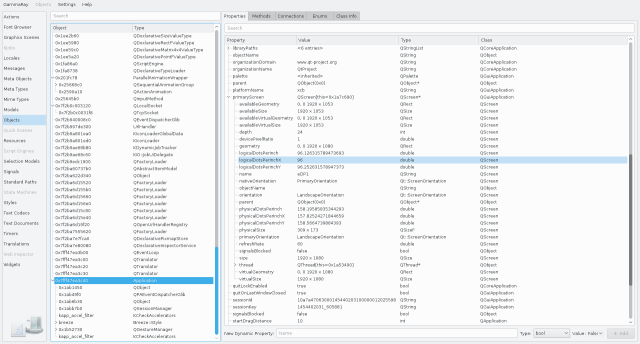

After launcher a target application with GammaRay, or attaching or connecting to a running one, you are presented with the GammaRay client. This is the primary user interface for exploring what is going on inside the target application.
The GammaRay client is available in two forms:

GammaRay contains a number of different tools, each providing a different view on the activities and data of the target application. A tool typically focuses on a specific Qt framework such at Qt Quick or state machines, or model/view.
Switching between tools is done via the tool list on the left side of the GammaRay client window. Only tools applicable to the current target applications are active. Inactive tools can be hidden via the context menu.
An overview of all available tools can be found in the Tools section of this manual.
Many tools in GammaRay deal with a set of objects of the target application, most commonly QObject sub-classes. To explore the properties of a selected object, those tools typically show the Object Inspection view on the right hand side (as seen in the above screenshot). The object inspection view contains a number of different tabs, depending on the type of the object.
An overview of all available object inspection tabs can be found in the Object Inspection section of this manual.
Different tools might show different aspects of the same object, so it's useful to be able to navigate to the current object in other tools. This is offered in most places via the context menu.
Equally, it is useful to navigate to the code that declared or instantiated an object, this is offered also via the context menu. This information is available under the following conditions:
If you are using GammaRay stand-alone (ie. not inside Qt Creator), you can configure the text editor to use for source code navigation via Settings > Code Navigation. Depending on your platform, a number of common pre-configured editors and IDEs can be selected. A custom editor command line can also be specified, using the following placeholders:
| Placeholder | Content |
|---|---|
%f | The full path to the source file. |
%l | The line number. |
%c | The column number. |
Finding the right objects in the many thousands existing in a target application typically can be challenging. GammaRay supports this by the following means: